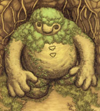
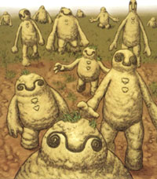

Go to: Schierke - Erica - Evarella (fairy) - Golem (mud creature)
Golem (mud creature)


good ref pictures
- light brown/tan bodies
- the colors up above are good, but i think you can make
the bodies a little darker/tanner.
- dark brown eyes/nose
- as you can see in the pictures, the outline of the
eyes/nose are dark brown (pretty self explanatory i guess =P)
- dark brown symbol in middle of chest
- again, pretty self explanatory
- green moss
- there is actually some moss included with the kit, that
you can spread around his body/head
TEXTURE
Well, basically these creatures are made out of mud/dirt, so even though the kit itself is very smooth, it'll be nice to paint it in a way that it looks like his body is a little fluffy with creases and stuff like that. also, feel free to paint some green details on his body too, like there's some grass on him or something (like the whole moss idea)
And that's that!